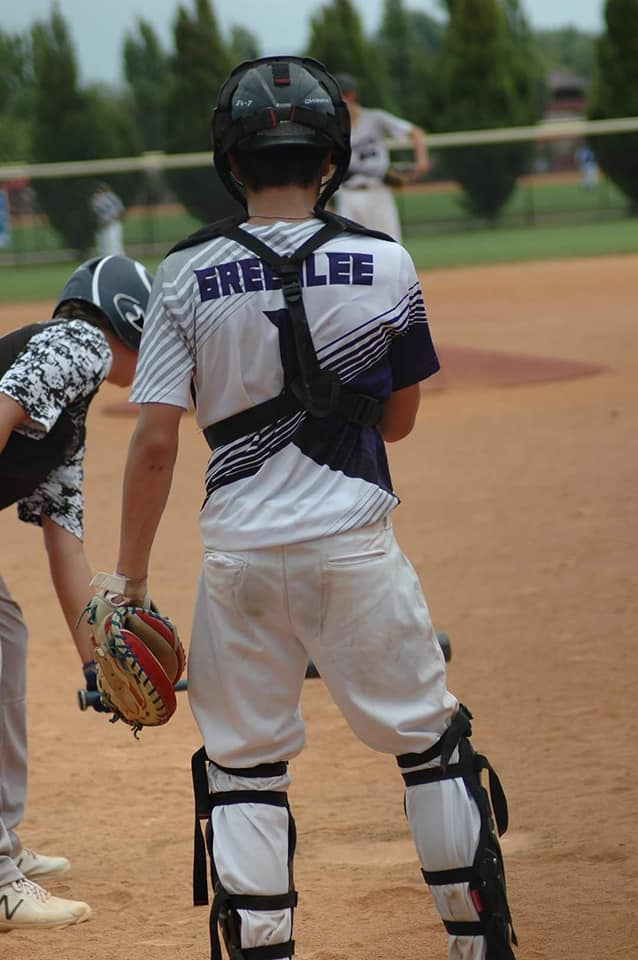
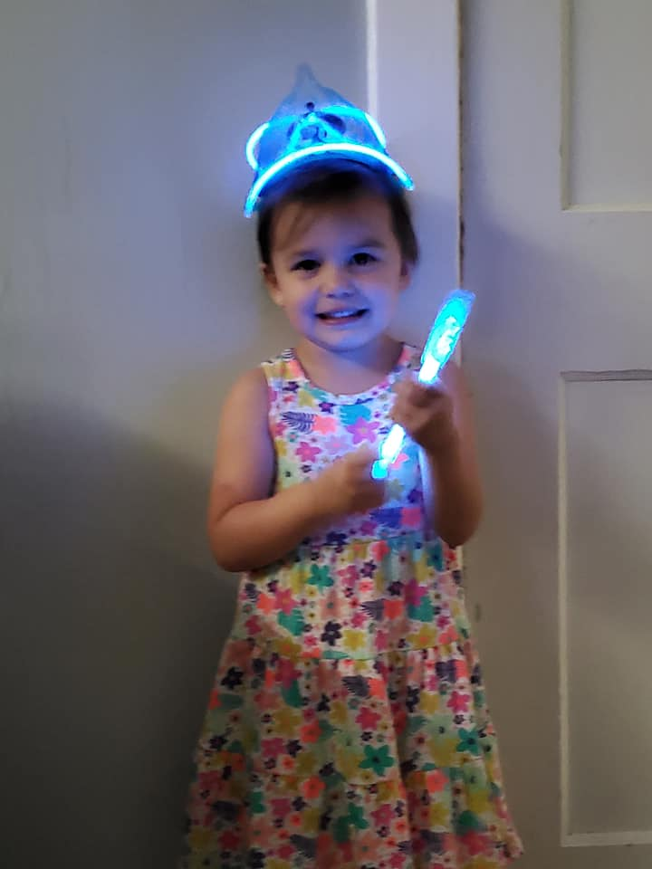

My Hometown

Growing up
My father was in the Navy. Luckily, while growing up I didnt have to move as often as other kids whose parents were in the military. I was born in
the Philippines and grew up in San Diego. Once my dad retired he wanted to go "home" so moved to Mascoutah which is not far from where he grew up.
HighSchool

I can honestly say when I first moved to Mascoutah I was not very happy. I went from beaches to corn fields and had never seen snow in my life.
I wasn't used to experiencing all the seasons and I missed all of my friends. The school and town was so small compared to what I was used to.
My Son

I have a son named Angelo who is now a freshman in highschool. When he was first born we stilled lived in Mascoutah but moved shortly after.
Growing up he had went to a couple of different schools and I knew I wanted to get him back to Mascoutah. I missed the small town feel and the schools are great.
Angelo loves to play baseball and is currently doing baseball warm ups at the highschool.
My daughter

I have a daughter name Leilani that is 3. Oddly enough by time she was born I was back to living in Mascoutah. Unfortunately due to COVID we chose to
not let her attend school this year. She does enjoy the parks in our area and getting to watch her big brother play baseball. Also, most of kids grandparents
live in town as well so she gets to spend a lot of time with them.
Where We Met
Both my husband and I graduated from Mascoutah. He is several years older than me so we didnt go to school together but I do know him when I was in school.
I was actually best friends with his sister in school so was already pretty close to his family before we even started dating. Throughout life we both had moved
away from Mascoutah but are glad that we are back.